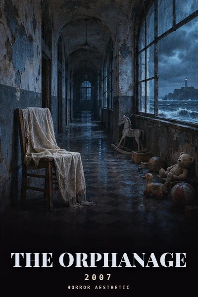

ПриютThe Orphanage (2007)
Режиссёр: Х. А. Байона · Испанский хоррор, Призраки, ДрамаDirector: J. A. Bayona · Spanish horror, Ghosts, Drama
Женщина возвращается в приют, где выросла, и вскоре её сын исчезает.A woman returns to the orphanage where she grew up, and soon her son disappears.
Лаура возвращается в старый приют, где росла, чтобы открыть там дом для детей с особыми потребностями, и переезжает с мужем и приёмным сыном Симоном. Мальчик находит новых невидимых друзей, а потом пропадает прямо на празднике.
Дальше фильм становится поиском: мать ищет ребёнка, а дом отвечает всё более странными знаками. Байона обходится без лишней крови и держит зрителя на внимательной тишине, а несколько сцен, как игра в «Раз, два, три, за стенку», остаются в памяти.
Фильм продюсировал Гильермо дель Торо, и его влияние чувствуется в тёплой, почти сказочной картинке и в том, что у призраков есть своя история. Белен Руэда в главной роли держит весь фильм.
Финал печален и красив. Это одна из самых сильных мистических драм о потере, и её стоит смотреть без спойлеров.
Laura returns to the old orphanage where she grew up to open a home for children with special needs, and moves in with her husband and adopted son Simón. The boy finds new invisible friends, and then vanishes during a party.
From there the film becomes a search: a mother looks for her child while the house answers with ever stranger signs. Bayona avoids needless blood and holds the viewer in an attentive silence, and a few scenes, like the game of knock-knock on the wall, stay in memory.
The film was produced by Guillermo del Toro, and his influence shows in the warm, almost fairy-tale image and in the fact that the ghosts have a history of their own. Belén Rueda in the lead holds the whole film.
The ending is sad and beautiful. It is one of the strongest supernatural dramas about loss, and is best watched without spoilers.